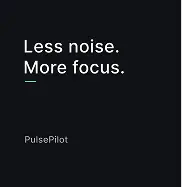
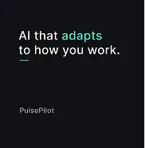
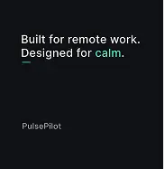
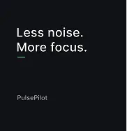
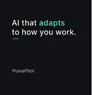
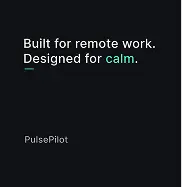
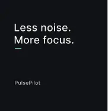
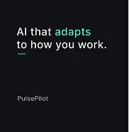
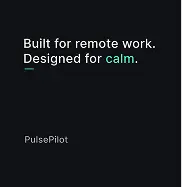

5. Social Posts and Short Motion Video
Selected frames and a short motion piece demonstrating how the brand system adapts across static and animated formats.
 





Case Study
Designing a compact brand system supported by restrained motion, focused on clarity, hierarchy, and tone rather than visual noise.
This project explores how branding, layout, and motion can work together to communicate intent clearly — especially in social-first and short-form contexts.
The goal was not to create a loud or overly expressive brand, but to demonstrate control using typography, spacing, and motion selectively to guide attention and reinforce hierarchy.
Many brand and social design projects rely heavily on decoration, excessive animation, or trend-driven visuals that don’t scale well across formats or time.
This project was created to explore a more disciplined approach — where brand elements remain consistent across static and motion formats, and animation is used only when it adds clarity or emphasis.
The challenge was to design a brand system that felt modern and expressive while remaining structured, reusable, and controlled.
Selected frames and a short motion piece demonstrating how the brand system adapts across static and animated formats.



The brand system and layouts were first designed in Figma, with careful attention to spacing, typography, and component reuse.
Motion pieces were created using a text-layer-driven approach, animating individual elements to maintain precise control over timing and emphasis.
The result simulates a real-world workflow where static and motion design coexist within the same system.
This project highlights my ability to combine visual design and motion while maintaining clarity, restraint, and production-ready thinking.